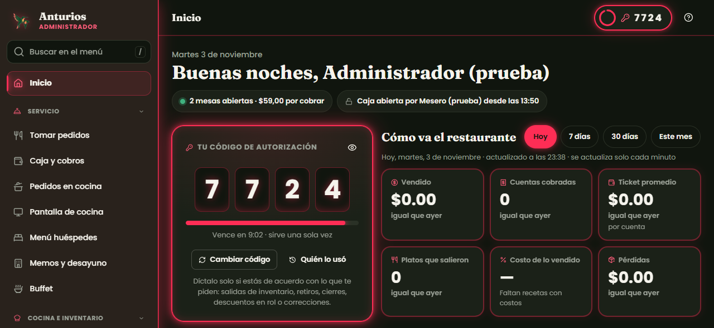

Sistemas para restaurantes
Pedidos, comandas, cocina, caja, bodega, recetas y reportes en un solo lugar.
Soy Joseph Choez. Hago programas que el personal usa todos los días: pedidos desde el celular, comandas que salen solas en cocina, caja, inventario, recetas con costos y facturación electrónica. Los instalo, los pruebo y doy soporte.

Caso real
Un restaurante dentro de un hotel en Ecuador necesitaba dejar el papel: comandas a mano, cuentas que no cuadraban y una bodega que nadie sabía cuánto tenía. Hice un sistema completo a su medida, lo instalé en su PC y lo sigo mejorando por versiones.


Las capturas son de una copia de demostración con datos de prueba, no de la base del restaurante.
Servicios
No vendo un programa de caja genérico. Me siento contigo, veo cómo trabaja tu gente y hago el sistema para eso.
Pedidos, comandas, cocina, caja, bodega, recetas y reportes en un solo lugar.
Inventario, ventas, turnos o lo que tu negocio lleve hoy en papel o en Excel.
Facturas al SRI desde tu propio sistema, con el RIDE en PDF.
Dejo todo andando en tu local: PC, red, impresoras térmicas y capacitación.
Otros proyectos
Un módulo independiente que arma, firma y envía facturas electrónicas al SRI y genera el RIDE. Se puede conectar a cualquier sistema. Tiene más de 120 pruebas automáticas y está probado en el ambiente de pruebas del SRI.
Una app web que se instala en el celular para leer un libro de a dos: plan de lectura, notas y preguntas para conversar. Funciona sin internet.
Cómo trabajo
Voy a tu local, veo cómo trabajan y anoto qué necesitas de verdad.
Precio cerrado, plazo y lo que incluye, por escrito y con contrato.
Ves avances seguido. Cada versión pasa pruebas antes de llegar a tu local.
Instalación, capacitación al personal y garantía de errores.
Contacto
Escríbeme, cuéntame cómo trabajan y te digo cómo te puede ayudar un sistema. Sin compromiso.